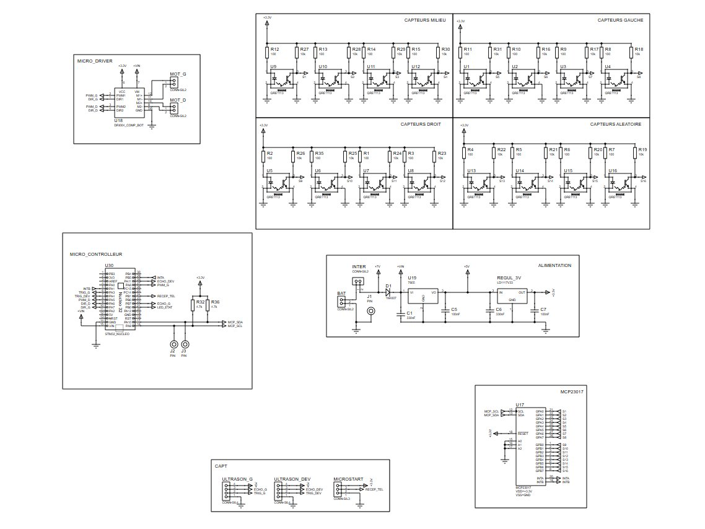
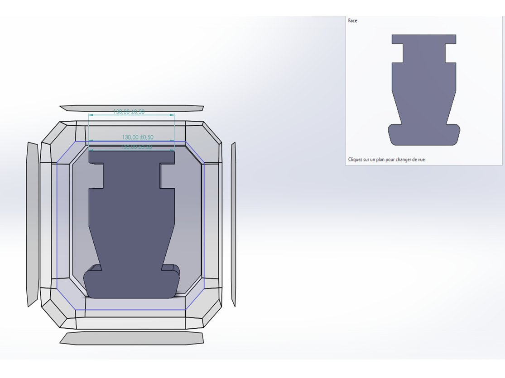
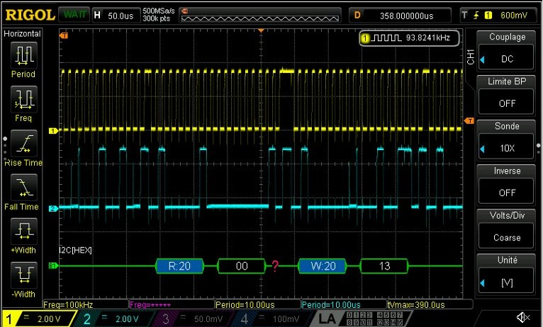

Robot Formule 1Formula 1 robot
Conception complète d'un robot autonome suiveur de ligne : carte électronique, forme du robot, programmation du STM32 et tests.
End-to-end design of an autonomous line-following robot: circuit board, robot shape, STM32 programming and testing.

Le contexte et l'objectifContext and goal
Dans le cadre d'une SAE de 2e année de DUT GEII, l'objectif était de concevoir, réaliser et programmer un robot entièrement autonome capable de suivre une ligne noire de 19 mm sur un circuit fermé, et de réaliser le meilleur temps en 3 minutes sur un circuit sans obstacle.
As part of a second-year project in my Electrical Engineering degree, the goal was to design, build and program a fully autonomous robot able to follow a 19 mm black line around a closed track, and to set the best time within 3 minutes on a track with no obstacles.
Contraintes : robot de 20 × 20 cm maximum, démarrage et arrêt automatiques sans intervention humaine, microcontrôleur STM32, alimentation sur batterie (LiPo 7,4 V retenue). Piste : bâche blanche de 4 × 8 m, virages de 20 cm de rayon minimum et croisements.
Constraints: robot no larger than 20 × 20 cm, automatic start and stop with no human input, STM32 microcontroller, battery power (7.4 V LiPo chosen). Track: 4 × 8 m white sheet, bends with a minimum 20 cm radius, and crossings.
RéalisationHow I built it
1. Une architecture en une seule carte1. A single-board design
Tous les composants du robot sont regroupés sur une seule et unique carte en forme de voiture de F1.
All the robot's components are gathered on one single circuit board shaped like an F1 car.
- Composants : un microcontrôleur STM32L432KC (Nucleo-32) ; un driver double pont en H pour contrôler le sens de rotation et la vitesse (PWM) des deux moteurs ; des régulateurs 5 V et 3,3 V qui abaissent la tension de 7,4 V de la batterie pour fournir la tension nécessaire à chaque composant ; un module de démarrage par télécommande ; 16 capteurs optiques QRE1113 ; un expandeur d'entrées/sorties MCP23017 ; et deux moteurs Pololu 6 V (réduction 5:1) avec des roues en silicone JSumo de 33 mm, qui donnent une vitesse théorique à vide d'environ 8 km/h et une bonne adhérence sur la bâche.
- Carte : le robot n'a pas de châssis. J'ai dessiné la silhouette de la carte sous SolidWorks en respectant les 20 × 20 cm, puis je l'ai exportée en DXF pour définir le contour de la carte dans Proteus. J'ai ensuite réalisé le typon à partir du schéma électrique. Enfin, j'ai soudé les composants et monté les roues. Des entretoises règlent la hauteur des capteurs au-dessus de la piste pour obtenir une lecture précise.
- Components: an STM32L432KC microcontroller (Nucleo-32); a dual H-bridge driver to control the direction and speed (PWM) of both motors; 5 V and 3.3 V regulators that step down the battery's 7.4 V to supply each component with the voltage it needs; a remote-start module; 16 QRE1113 optical sensors; an MCP23017 input/output expander; and two Pololu 6 V motors (5:1 gear ratio) with 33 mm JSumo silicone wheels, giving a theoretical no-load speed of about 8 km/h and good grip on the track.
- Board: the robot has no chassis. I drew the board's outline in SolidWorks within the 20 × 20 cm limit, then exported it as DXF to define the board edge in Proteus. I then designed the PCB layout from the schematic. Finally, I soldered the components and fitted the wheels. Spacers set the sensors' height above the track for accurate readings.


2. Programmation du STM322. STM32 programming
Le code est écrit en C sous STM32CubeIDE. Les moteurs sont pilotés en PWM grâce aux timers, réglés sur une fréquence de quelques kHz : inaudible, elle lisse aussi le courant des moteurs. Toutes les 20 ms, le programme lit les capteurs et ajuste la vitesse de chaque roue pour garder le robot sur la ligne.
The code is written in C in STM32CubeIDE. The motors are driven by PWM using the timers, set to a few kHz: inaudible, this frequency also smooths the motor current. Every 20 ms, the program reads the sensors and adjusts the speed of each wheel to keep the robot on the line.
Difficultés et solutionsChallenges and solutions
- Bornier de batterie inversé sur la carte : j'ai coupé les pistes en cuivre et soudé des fils avec la bonne polarité.
- Module du driver moteur imprimé à l'envers : je l'ai surélevé avec des broches pour éviter la surchauffe du composant.
- Capteurs dans le désordre : l'ordre physique des capteurs ne correspondait pas à l'ordre des entrées du MCP23017. J'ai refait la correspondance dans un tableau Excel, puis remis les capteurs dans l'ordre dans le code, bit par bit.
- Vérification à l'oscilloscope : j'ai contrôlé les signaux I²C (SDA, SCL) et les sorties des capteurs ; le décodage I²C a confirmé l'adresse 0x20 du MCP23017.
- Battery connector reversed on the board: I cut the copper tracks and soldered wires with the correct polarity.
- Motor driver module printed upside down: I raised it on header pins to stop the component from overheating.
- Sensors out of order: the physical order of the sensors did not match the MCP23017 input order. I rebuilt the mapping in an Excel table, then put the sensors back in order in the code, bit by bit.
- Oscilloscope checks: I checked the I²C signals (SDA, SCL) and the sensor outputs; I²C decoding confirmed the MCP23017 address (0x20).

RésultatsResults
Épreuve réussie : le robot suit la ligne de bout en bout, démarre et s'arrête seul, avec des corrections de trajectoire efficaces, dans le respect des contraintes de taille et de délai.
Challenge passed: the robot follows the line from start to finish, starts and stops on its own, with effective course corrections, within the size and time constraints.
Pistes d'amélioration :
Next improvements:
- un régulateur PID, avec des capteurs espacés régulièrement, pour des trajectoires plus fluides et plus rapides ;
- réordonner les capteurs sur la carte pour qu'ils suivent l'ordre des broches du MCP23017.
- a PID controller, with evenly spaced sensors, for smoother and faster driving;
- reorder the sensors on the board so they follow the MCP23017 pin order.